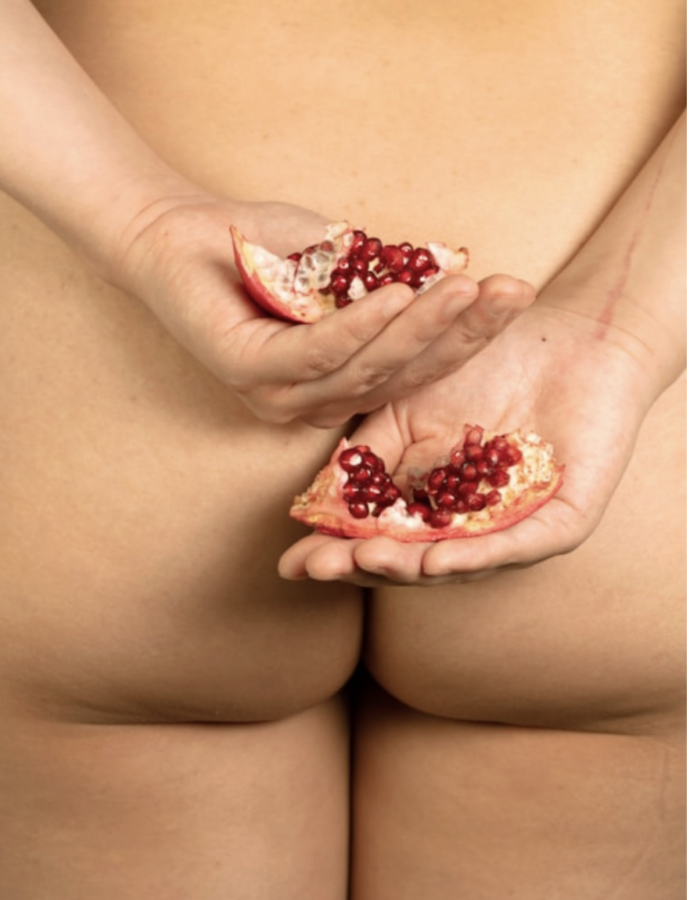

Seeds of Resilience – Closing Reception & Walkthrough
Closing Reception & Walkthrough: Saturday, May 9, 2–4 PM CST
Woman Made Gallery (WMG) is pleased to announce the opening of Seeds of Resilience, a multidisciplinary art exhibition featuring work by 41 artists. The exhibition opens Saturday, April 11, 2026, with a public artist reception from 4 to 7 p.m. and remains on view through May 9, 2026.
Curated by Monica J. Brown and Nora Moore Lloyd, Seeds of Resilience brings together women and non-binary artists whose works explore how personal, cultural, and ecological survival are deeply intertwined. Centered on themes of environmental justice, ancestral memory, and the intimate relationship between care and resistance, the exhibition takes the seed as its guiding metaphor.
Exhibition Events
The exhibition opens with an artist reception at Woman Made Gallery, 1332 S. Halsted St. in Chicago, on Saturday, April 11, from 4 to 7 p.m.
The Closing Reception includes an Artist Walkthrough on Saturday, May 9 from 2 to 4 p.m., offering a final opportunity to meet the participating artists in person. Events at WMG are free and open to the public.
Exhibiting Artists
Brooke Bartholomew, Sharon L Bjyrd, Sharon Bladholm, Gabriella Boros, Julia Bustos-Vasquez, Julie Carpenter, Emily C-D, Lynn Cox-Winston, Sharmon Davidson, Victoria Fuller, DiDi Grimm, Senyah Haynes, Lisa Marie Phoenix Jackson, Natalie Jackson, Adia Jamille, Linye Jiang 江麟冶, Joi, Lilly Kim, Yuliya Klochan, Sarita Kvam, Tulika Ladsariya, Beatriz Ledesma, Andi Linden, Marian Lyndgaard, Lauren Macklin, Erica Moriarty, Stephanie Mulvihill, Andryea Natkin, Courtney Nzeribe, Pamela Penney, Laurie Peters, Leah Schenbaum, Erin K. Schmidt, Piper Snowber, Dorothy C. Straughter, Harriette Tsosie, Chanya Vitayakul, Gail Wagner, Joan Wheeler, Marjorie Woodruff, Stella Zee